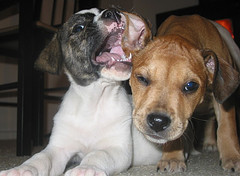
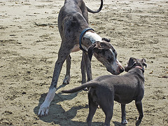
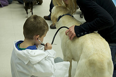
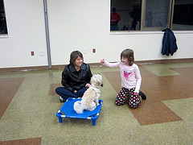

Socialization
Depending on your dog's age, socializing with other dogs can be easier or more challenging. Puppies are more open to new experiences, while older dogs can be more set in their ways. Doggie Dates takes into account your dog's age and past experiences when establishing their playdates. We have provided general information on the differences between puppies and older dogs, as well as some things to be aware of.
1. Puppies
Image courtesy of Flickr
ASPCA: "Puppies are most accepting of new experiences between 3 and 12 weeks old. After that age, they become much more cautious of anything they haven't yet encountered. From about 12 to 18 weeks old the opportunity to easily socialize the puppy ends—and with each passing week it becomes harder to get the pup to accept and enjoy something that he's initially wary of."
AKC: "Because of the evidence that early socialization can prevent serious canine behavior problems such as fear, avoidance, and aggression, in 2008 the AVSAB issued the position statement that it should be the standard of care for puppies to be socialized in the first 12 weeks. "
2. Adults
Image courtesy of Flickr
Animal Humane Society: "...start by introducing Fido to one dog at a time. Invite a friend to bring her gentle, easygoing dog on a walk with you and Fido. Allow polite distance between dogs while they get accustomed to each other. If both dogs appear relaxed throughout the walk, allow them to sniff each other briefly. Keep leashes loose and each interaction short. If either dog appears to be tensing up, call the dogs apart with pleasant, relaxed voices. If both dogs' bodies appear loose and tails are wagging, consider an off-leash session in one of your fenced yards with leashes dragging, using the same short sessions and reinforcement for relaxed behavior."
3. Vaccinations
Image courtesy of Flickr
ASPCA:"In 2006, the American Animal Hospital Association's Canine Task Force published a revised version of guidelines regarding canine vaccinations. The guidelines divide vaccines into three categories—core, non-core and not recommended.
—Core vaccines are considered vital to all dogs based on risk of exposure, severity of disease or transmissibility to humans. Canine parvovirus, distemper, canine hepatitis and rabies are considered core vaccines by the Task Force.
— Non-core vaccines are given depending on the dog's exposure risk. These include vaccines against Bordetella bronchiseptica, Borrelia burgdorferi and Leptospira bacteria.
Your veterinarian can determine what vaccines are best for your dog."
4. Behavior Problems
Image courtesy of Flickr
ASPCA: "Aggression can be a dangerous behavior problem. It's complex to diagnose and can be tricky to treat. Many behavior modification techniques have detrimental effects if misapplied. Even highly experienced professionals get bitten from time to time, so living with and treating an aggressive dog is inherently risky. A qualified professional can develop a treatment plan customized to your dog's temperament and your family's unique situation, and she can coach you through its implementation. She can monitor your dog's progress and make modifications to the plan as required. If appropriate, she can also help you decide when your dog's quality of life is too poor or the risks of living with your dog are too high and euthanasia is warranted. Please see our article, Finding Professional Help, to learn how to find a Certified Applied Animal Behaviorist (CAAB or ACAAB), a veterinary behaviorist (Dip ACVB) or a Certified Professional Dog Trainer (CPDT) in your area. If you choose to employ a CPDT, be sure that the trainer is qualified to help you. Determine whether she has education and experience in treating canine aggression, as this expertise isn't required for CPDT certification."